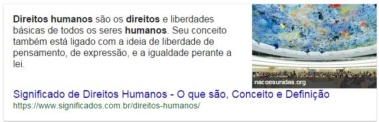

Letramento Digital
Módulo 2, Encontro 2.3
Gui Bueno, olá novamente!
Quem somos nós?
- Nome.
- Fruta ou legume favorito.
E a Lista de Presenças?
A maquininha está FUNCIONANDO PARADA
Internet Livre
- Terças às sextas: das 14h às 15h.
- Sábados, domingos e feriados: 11h às 12h.
Encontro 2.1
- O que é a Internet?
- Visitando websites
- Criando uma conta de e-mail
Pesquisa de Sala
Nosso uso da internet
| 1. Você já acessou a internet? | 09/12 |
|---|---|
| 2. Você tem o hábito de acessar a internet? | 05/12 |
| 3. Você tem acesso à internet em casa? | 04/12 |
| 4. Você tem acesso à internet em seu celular? | 07/12 |
| 5. Você utiliza o WhatsApp? | 07/12 |
| 6. Você sabe fazer uma pesquisa no Google? | 09/12 |
| 7. Você sabe acessar um site? | 06/12 |
| 8. Você possui um endereço de e-mail? | 08/12 |
| 9. Você tem o hábito de enviar/receber e-mails? | 05/12 |
| 10. Você possui uma conta no Facebook? | 04/11 |
Internet
- Uma rede global de computadores.
- Funciona como um sistema de correios.
- Pequenos pacotes de dados digitais
Complexo Funcionamento
Em Milisegundos
O que há nos pacotes?
Guerra Fria
Departamento de Defesa
ARPANET, 1969
Estatísticas
- 1969: 4 computadores conectados
- 1986: 5,000 computadores conectados
- E hoje?
7.5 bilhões no mundo
Navegador
O que é?
Programa para navegar na Internet
Internet
Navegador
Você comanda!

- Você escolhe para onde ir!
- É preciso ter o endereço!
Site
Ou seria "sítio"?
Quais sites vocês conhecem?
- Sesc
- Shoptime
- G1
- Globo Play
O "endereço" de todo navegante
Electronic-mail
Correio eletrônico
Cartas!
O que é preciso?
- Remetente
- Destinatário
- Carta, é claro!
http://www.gmail.com.br
O que nós fizemos?
Criamos um endereço de e-mail.
Formulário
Preenchimento
Concordar com Termos
Boas-vindas!
Caixa de entrada
Probleminhas encontados
- Idioma em inglês.
- Muitos e-mails já criados.
- Necessidade de celular.
A experiência foi super válida!
Encontro 2.2
- Nova tentativa com e-mails
- Buscadores
- Google e Google Imagens
Sobre provedores de e-mail!
Há milhares de provedores de e-mail!
Estrutura sempre parecida.
Exemplo: gob.bueno@gmail.com
usuário
@
provedor
.com.br
.com
.gov.br
Além disso...
Uma pessoa pode ter vários endereços de e-mail.
Senhas
Senhas e Chaves
- Para entrar em casa, é preciso o endereço e as chaves.
- A chave da minha casa não funciona na casa do vizinho.
- Se eu perder a minha chave, eu não posso entrar em casa.
Além disso...
- Ao digitá-la, os caracteres aparecem assim: ******.
- Cada serviço tem suas regras para a criação de textos.
- MAIÚSCULAS e minúsculas são letras diferentes.
Enviando e Recebendo E-mails
Criei nossos e-mails @bol.com.br.
Por que @bol.com.br?
- Gratuito.
- Rápido!
- Mesmo serviço.
- Em Português.
Que azar!
"Usuários encontram problemas para acessar e-mail do BOL".
Tentaremos novamente logo mais!
Revisão Buscadores
O que são? O que fazem?
Como se visita um site, mesmo?
Digitando o endereço do site!

Esta é a barra de endereços!
Leia o que está na barra e você saberá onde está.
Quantos endereços (família, amigos, locais) você tem memorizado?
Rua Pelotas, 141
ou
Sesc Vila Mariana
?
Av. Paulista, 1578
ou
MASP
?
Praça Ramos de Azevedo, s/n
ou
Teatro Municipal de São Paulo
?
É mais fácil guardar nomes e caminhos...
... do que guardar endereços!
http://www.prefeitura.sp.gov.br
ou
Site da Prefeitura de SP
?
http://sescsp.org.br
ou
Site do SESC
?
Para isso, existem os buscadores!
De todos os tipos e para todos os propósitos.
Lista telefônica...
... com a qual você se comunica!
Buscador #1 Google
Buscador de sites e páginas.
História
- Fundado em 1998 por 2 estudantes de PhD.
- No início, era apenas um simples buscador.
- Hoje, está entre as maiores empresas do mundo!
http://www.google.com.br
No Brasil, falamos "GÚ-gol"

Perguntas
- Qual a temperatura em ____?
- Resultado último jogo do ____?
- Qual a capital da ____?
- Quantos habitantes tem em ___?
- O que significa ___?
Às vezes a resposta é imediata...
Qual a temperatura em São Paulo?
Resultado último jogo do São Paulo?
Qual a capital da Estônia?
Quantos habitantes tem em Cingapura?

O que significa Despacito?
... e, sempre, há uma lista de sites!
O que significa Despacito?
Google é tão comum que, atualmente...
Barra de endereços = Barra de busca
Nos navegadores mais novos, isso é muito comum.
Buscador #2 Google Imagens
Uma, dentre tantas ferramentas da Google.
Imagens
- Fotos?
- Desenhos?
- Textos?
http://www.google.com.br
Pesquise por "Lista telefônica" e clique em imagens
Lista telefônica
Práticas
- Furacão Irma
- Prefeitura São Paulo
- Letramento Digital
- Novelas antigas
- Deserto Saara
- Sede Google
- Maior montanha russa
- Paisagens brasileiras
- Sesc Vila Mariana
Meus objetivos foram...
- Criar a experiência de um primeiro contato.
- Mostrar o quanto a Google nos ajuda e encontrar tudo.
- Ajudar para que vocês entendessem os mecanismos...
- Para explorar e buscar coisas do próprio interesse!
Caso Nelly
Qual a temperatura em Fortaleza?
Fortaleza no Google Imagens
Notícias de Fortaleza
Hotéis em Fortaleza
Caso Sueli
O que significa "despacito"
É exatamente isso!
Explorar a internet é ter iniciativa.
Modelo Transmissão
Modelo Transmissão

Modelo Comunicação

Encontro 2.3.
Mais próximos do fim que do começo!
Metodologia Nova
O que vocês acharam dela?
Práticas
- Prática 1
- Prática 2
- Prática 3
- Prática 4
Cada um em seu ritmo!
Uns sabem mais, outros sabem menos.
Professor itinerante
Solucionando dúvidas e problemas.
Zona de Desenvolvimento Próximo
Vocês conseguem comigo, depois sozinhos.
Ensino situacional
Trazer situações próximas do dia a dia.
Inquiry-based learning
Primeiro de tudo, é bom ter dúvidas.
Seguimos praticando dessa forma?
Práticas em Google v2
Para aquecer a aula de hoje!
Ferramentas

Site do Sesc (Clique com o botão esquerdo)
Digite aqui seu nome:
Botões de Voltar e Avançar
Carregando

Perguntas
- Quantas unidades tem o Sesc?
- Como fazer bolinho de chuva?
- Como acabar com a caspa?
- Como Albert Einstein morreu?
- Por que damos risadas?
- Comer leite com manga faz mal?
- Qual e o maior país do mundo?
- Quantos países ha na América do Sul?
Mais práticas!
- Letramento Digital
- Notícias Terceira Idade
- Notícias Furacão Irma
- Receita torta de limão
- Gripe prevenção
- Melhores Restaurantes Vila Mariana
- Horario de funcionamento Mercadão Municipal
- Programação Auditório Ibirapuera
Quem publica as informações que achamos no Google?
Se está na Internet, então é verdade?
Como, então, encontrar informação de qualidade? Como podemos confiar?
Buscador #3 Google Mapas
Muito além de um simples mapa.
Quais são as dificuldades?
O que nos traz o Google Maps?
- Mapa das ruas, no mundo todo.
- Planejamento de rotas.
- Condições de trânsito ao vivo.
- Imagens de satélite.
- Visão panorâmica em 360º da rua.
Demonstração
Mapa das ruas
Pode ser: endereço, local, bairro, ...
Demonstração
Planejamento de Rotas
Condições de trânsito ao vivo.
O fim dos mapas desenhados à mão?
Demonstração
Imagens de satélite.
Demonstração
Visão panorâmica em 360º da rua
Street View
Práticas
- Mapa da Avenida Paulista
- Mapa da Estação da Luz
- Rota da Estação da Luz até sua casa (de ônibus)
- Rota da Estação da Luz até sua casa (de carro)
- Como está o trânsito da Estação da Luz até a sua casa?
- Mapa da Sua Rua
- Street View da sua casa
- Street View de algum outro endereço de sua escolha
- Street View pelas ruas de Ouro Preto, MG
- Palácio de Versalhes, França
Muito obrigado!
gob.bueno@gmail.com